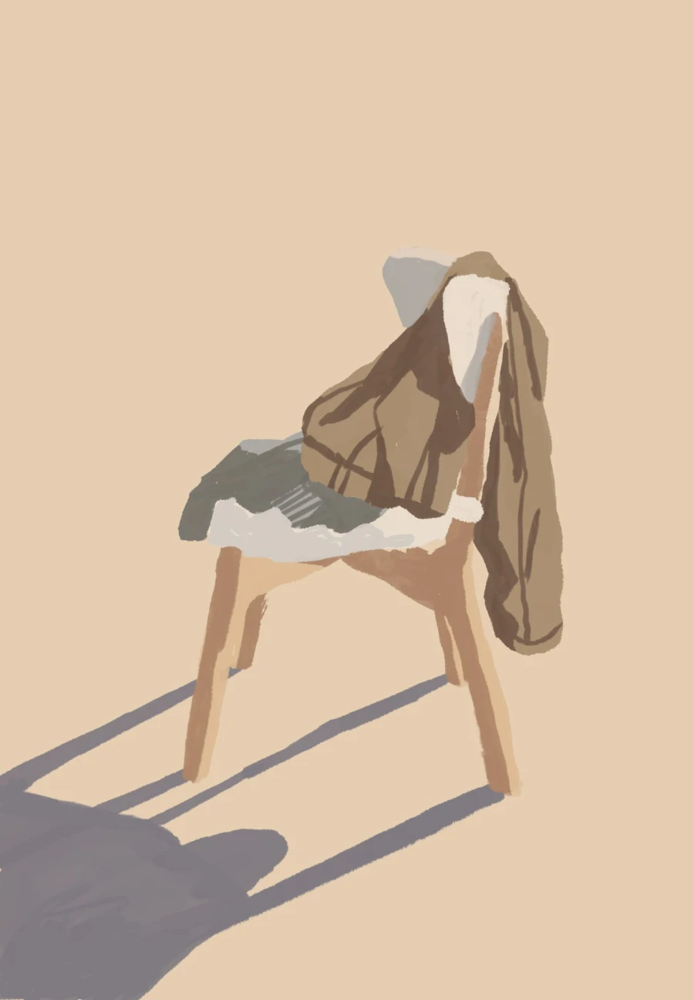

Hello
Mon 8 Aug ☀︎
I am using this space to sporadically explore HTML, CSS, and digital accessibility. It will probably work like a chair where you put all your clothes when unsure about their short-term reusability.
The previous image uses the WebP format—considerably smaller (27 KB) than PNG or JPEG. Despite its size, it retains most of its quality: no need to have multiple images for different viewports and resolutions.
⚘